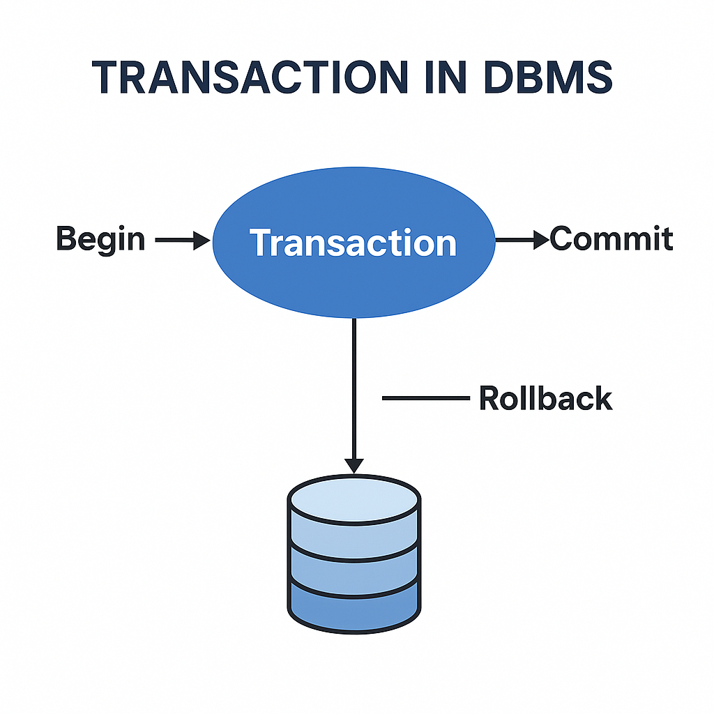
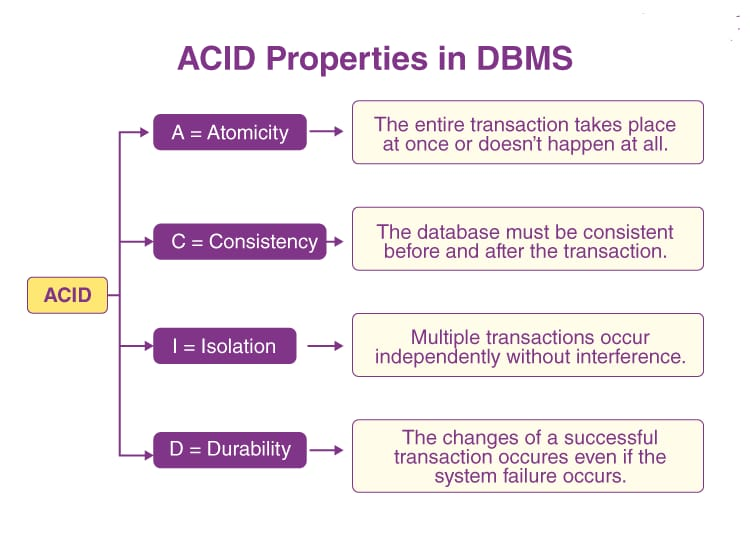

Understanding Transactions in Databases
A transaction in a database is a sequence of operations performed as a single logical unit of work. A transaction can include various operations such as:
- Reading data
- Writing data
- Updating data
- Deleting data

A transaction is a logical unit of work in a database system that consists of a sequence of operations performed as a single unit.
A transaction ensures that the database remains consistent and adheres to integrity constraints, even in cases of system failure.
Transactions are crucial in database management as they help in maintaining data accuracy, reliability, and consistency.
In practical applications, transactions typically involve multiple operations such as inserting, updating, deleting, or retrieving records.
The primary goal of a transaction is to transition the database from one consistent state to another while following the ACID properties
(Atomicity, Consistency, Isolation, Durability).
ACID Properties of Transactions
Transactions are governed by a set of properties known as ACID, which stands for:
- Atomicity: Ensures that a transaction is treated as a single unit. All operations must succeed for the transaction to be committed; otherwise, it is rolled back, maintaining data integrity and preventing partial updates.
Example: If an online order fails after payment is deducted, the payment is automatically refunded.
- Consistency: Guarantees that a transaction brings the database from one valid state to another. It ensures that all data integrity constraints are met, and if a transaction violates these rules, it will not be committed.
Example: If a user books a flight ticket, the available seat count must decrease accordingly.
- Isolation: Ensures that transactions are executed independently. Even if multiple transactions occur simultaneously, the results of each transaction remain hidden from others until they are committed, preventing data inconsistencies.
Example: Two users booking the same concert ticket should not both get confirmation for the last seat.
- Durability: Guarantees that once a transaction is committed, its effects are permanent. Changes made by the transaction will survive system failures, ensuring that the database remains consistent and reliable.
Example: If a product is added to an e-commerce inventory, it remains there even after a system restart.

Conclusion
Understanding transactions and their ACID properties is essential for anyone working with databases. These properties ensure that transactions are processed reliably, maintaining data integrity and consistency. By adhering to the ACID principles, database systems can effectively manage concurrent access and recover from failures, providing a robust environment for data management.